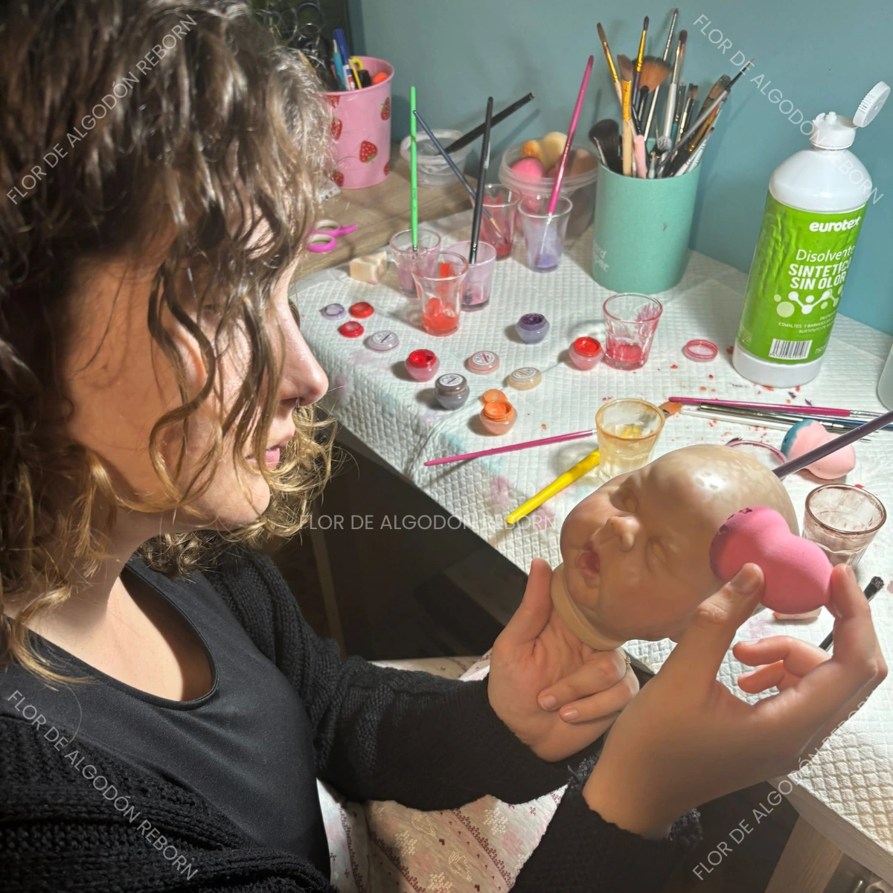

Galería artesanal
Descubre el proceso y los detalles de cada bebé reborn
Proceso de pintura
Capas finas aplicadas a mano para realismo extremo

Detalle de manos
Textura y sombreado hiperrealista

Resultado final
Bebé reborn completamente terminado

Expresión facial
Detalle realista en ojos, labios y piel

Reborn moteado rojo
Acabado artesanal con tonos realistas y detalles únicos